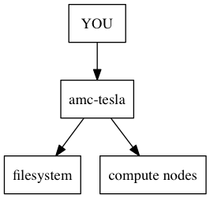

| Class date: | 2015 Feb 10 Tues |
|---|---|
| Last updated: | March 26, 2015 |
Class 5 : BEDTools§
Goals§
- Learn to run scripts on the cluster via the queuing system
- Learn about genomic data types and where to get data
- Start to use
bedtoolsto analyze genomic data
Cluster etiquette§
There are some specific rules you need to know when you're operating in a cluster environment.

Important
DO NOT run jobs on the head node (amc-tesla). The head node is the
brains of the cluster and it can easily be overextended. Use qlogin
instead.
Example commands on the cluster§
Find the size of the file system:
$ df -h
Find how much space you have allocated:
$ quota -h
The queueing system§
The cluster uses a queueing system that will run jobs that you submit to it. You can write a small test script to see how the system works. First, write this into a run.sh file:
#!/usr/bin/env bash
#BSUB -J sleeper
#BSUB -e %J.err
#BSUB -o %J.out
sleep 20
The queueing system (2)§
The #BSUB lines are comments, but are read by the bsub program to
identify features associated with your job.
-Jsets the job's name%Jis a unique job ID that is set when you run the job.-eand-oset the filenames for stderr and stdout from the job
The queueing system (3)§
Now you can submit the script to the queuing system. As soon as you submit it, you can check on its progress:
$ bsub < run.sh
$ bjobs
After the job finishes, you should see two new files that end .out and .err; these stdout and stderr from the running job. Look at the contents of those files so you know what is in each one.
Killing jobs§
Sometimes you need to kill your jobs. You can kill specific jobs using
their job ID numbers, obtained from checking bjobs:
$ bkill <jobid>
You can also kill all of your jobs at once:
$ bkill 0
Warning
bkill 0 is dangerous – it will wipe out all of your jobs. If
you have long-running jobs that you forgot about, you will kill them
too if you are not careful!
Other cluster-specific commands§
$ bhosts # hosts in the cluster
$ man bhosts # bsub man page
$ bqueues # available queues
$ lsload # check load values for all hosts
BEDTools§
Goals§
- Introduce the BEDTools suite of tools.
- Understand why using BEDTools is needed.
- Practice common operations on BED files with BEDTools.
BEDTools Overview§
BEDTools will be one of the tools with the best return on investment. For example, to extract out all genes that overlap a CpG island:
$ bedtools intersect -u -a genes.hg19.bed.gz -b cpg.bed.gz \
> genes-in-islands.bed
intersect is a bedtools tool. It follows a
common pattern in bedtools that the query file is specified after the
-a flag and the subject file after the -b flag
BEDTools Utility§
Finding all overlaps between a pair of BED files naively in python would look like:
for a in parse_bed('a.bed'):
for b in parse_bed('b.bed'):
if overlaps(a, b):
# do stuff
If 'a.bed' has 10K entries and 'b.bed' has 100K entries, this would involved checking for overlaps 1 billion times. That will be slow.
BEDTools uses an indexing scheme that reduces the number of tests dramatically.
Note
See the original BEDTools paper for more information: http://bioinformatics.oxfordjournals.org/content/26/6/841.full
BEDTools Utility (2)§
- Fast: faster than intersect code you will write
- Terse: syntax is terse, but readable
- Formats: handles BED, VCF and GFF formats (gzip'ed or not)
- Special Cases: handles stranded-ness, 1-base overlaps, abutted intervals, etc. (likely to be bugs if you do code in manually)
BEDTools Commands§
To see all available BEDTools commands, type
$ bedtools
The most commonly used BEDtools are:
BEDTools Documentation§
The BEDTools documentation is quite good and ever improving.
See the documentation for intersect with:
$ bedtools intersect
- The online HTML help is also good and includes pictures:
- https://bedtools.readthedocs.org/en/latest/content/tools/intersect.html
BEDTools intersect§
Have a browser window open to BEDTools intersect documentation. It will likely be the BEDTools function that you use the most. It has a lot of options.

"-v" means (like grep) include all intervals from -a that do not overlap intervals in -b
Example Files§
$ cat a.bed
chr1 10 20 a1 1 +
chr1 100 200 a2 2 -
$ cat b.bed
chr1 20 30 b1 1 +
chr1 90 101 b2 2 -
chr1 100 110 b3 3 +
chr1 200 210 b4 4 +
What will happen if you intersect those files? For example, the a.bed region chr1:100-200 overlaps:
chr1:90-101
chr1:100-110
from b.bed
intersect§
intersect with default arguments means extract chunks of `-a` that overlap regions in `-b`
$ bedtools intersect -a a.bed -b b.bed
chr1 100 101 a2 2 -
chr1 100 110 a2 2 -
Here is the original interval from a.bed:
chr1 100 200 a2 2 -
And the overlapping intervals from b.bed:
chr1 90 101 b2 2 -
chr1 100 110 b3 3 +
intersect -wa§
Often, we want the entire interval from -a if it overlaps any interval in -b
$ bedtools intersect -a a.bed -b b.bed -wa
chr1 100 200 a2 2 -
chr1 100 200 a2 2 -
We can get that uniquely with (-u)
intersect -wo§
We can see which intervals in -b are associated with -a
$ bedtools intersect -a a.bed -b b.bed -wo
chr1 100 200 a2 2 - chr1 90 101 b2 2 - 1
chr1 100 200 a2 2 - chr1 100 110 b3 3 + 10
intersect exercise§
What happens if you reverse the arguments? E.g. instead of:
-a a.bed -b b.bed
use:
-b a.bed -a b.bed
Try that with no extra flags, with -u, -wa, -wo.
How does it compare to the original?
intersect -c§
We can count overlaps for each interval in -a with those in -b with
$ bedtools intersect -a a.bed -b b.bed -c
chr1 10 20 a1 1 + 0
chr1 100 200 a2 2 - 2
This is our original a.bed with an additional column indicating number of overlaps with b.bed
intersect -v§
Extract intervals in a.bed that do not overlap any interval in b.bed
$ bedtools intersect -a a.bed -b b.bed -v
chr1 10 20 a1 1 +
Extract intervals in b.bed that do not overlap any interval in a.bed
$ bedtools intersect -a b.bed -b a.bed -v
chr1 20 30 b1 1 +
chr1 200 210 b4 4 +
Intersect Summary§
- fragments of a that overlap b: intersect -a a.bed -b b.bed
- complete regions of a that overlap b: intersect -a a.bed -b b.bed -u
- intervals of b as well as a: intersect -a a.bed -b b.bed -wo
- number of times each a overlaps b: intersect -a a.bed -b b.bed -c
- intervals of a that do not overlap b: intersect -a a.bed -b b.bed -v
Exercises§
Use the cpg.bed.gz and genes.hg19.bed.gz files for the following exercises:
- Extract the CpG islands that touch any gene [24611]
- Extract CpG islands that do not touch any gene [7012]
- Extract (uniquely) all of each CpG Island that touches any gene [21679]
- Extract CpG's that are completely contained within a gene (look at the help for a flag to indicate that you want the fraction of overlap to be 1 (for 100 %). [10714]
- Report genes that overlap any CpG island. [16908]
- Report genes that overlap more than 1 CpG Island (use -c and awk). [3703].
Note
as you are figuring these out, make sure to pipe the output to less or head
Other Reading§
- Check out the online documentation.
- A tutorial by the author of BEDTools
Intersect Bam§
We have seen that intersect <bedtools:intersect> takes -a and -b arguments. It can also intersect against an alignment BAM file by using -abam in place of -a
e.g:
$ bedtools intersect \
-abam experiment.bam \
-b target-regions.bed \
> on-target.bam
Intersect Strand§
From the help , one can see that intersect can consider strand. For example if both files have a strand field then
$ bedtools intersect -a a.bed -b b.bed -s
Will only consider as overlapping those intervals in a.bed that have the same strand as b.bed.
Closest§
with intersect we can only get overlapping intervals. closest reports the nearest interval even if it's not overlapping.
Example: report the nearest CpG to each gene as long as it is within 5KB.
bedtools closest \
-a genes.hg19.bed.gz \
-b cpg.bed.gz -d \
| awk '$NF <= 5000'
Genomecov§
Get coverage of intervals in BED by BAM

Usually want the last option -bg -split
<Thank You!>